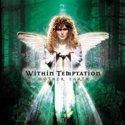
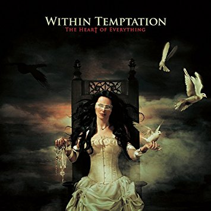

13 Within Temptation

Within Temptation es una banda neerlandesa de metal sinfónico formada en el año 1996 por Sharon den Adel, Robert Westerholt, Michiel Papenhove, Martijn Westerholt, Jeroen van Veen e Ivar de Graaf.3 Su estilo ha evolucionado desde el doom metal, el metal celta, el metal gótico, entre otros, hasta el metal sinfónico/rock sinfónico como ellos mismos han declarado.12 Aunque el grupo sigue siendo a menudo clasificado como gótico, la vocalista Sharon den Adel declaró en una entrevista que no consideraba a la banda como gótica.
Integrantes Actuales: Sharon den Adel, Rudolf Adrianus Jolie, Jeroen van Veen, Martijn Spierenburg, Robert Westerholt, Stefan Helleblad, Mike Coolen.
Top Albums

Mother Earth

Silent Force

The Heart of Everything